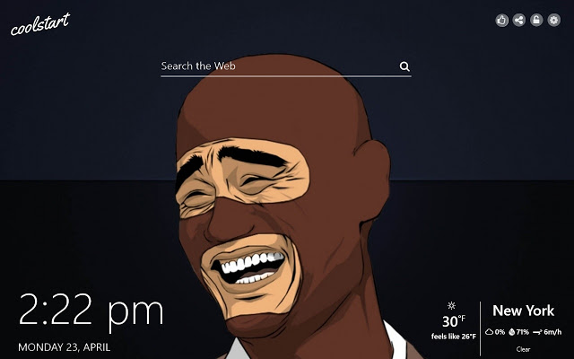

- Funny
- Horror
- Home
Lulubog
Sa malawak na karagatan di sinasadyang nagkaron ng aberya Ang isang barko sakto naman na sa lugar pa ng napakaraming pating pa Ito nagka aberya... . Agad na lumabas at pinuntahan ng kapitan ang mga pasehero upang sabihan Ang mga Ito tungkol sa aberya ng barko.. . Kapitan : Nagkaron ng aberya ang barko..!! Nabutas ang ilalim na bahagi nito at anumang oras ay lulubog na ito..!! Lulutang lamang Ito Kung magababawas tayo ng gamit upang mailigtas ang karamihan..!! . Agad na kumilos Ang mga pasahero at Tatlong pasahero ang nag volunteer na magtapon ng gamit Amerikano , Bumbay at Pilipino.. . Amerikano : itatapon ko tong dala Kong maleta..!! . Bumbay :(nagtataka) Bakit maleta Ang itatapon mo..!!? . Amerikano : (nakangiti) Dahil marami na samin nito..!! Hehehe..!! . Bumbay : Itatapon kotong mabigat na karpet na dala ko..!!! . Pilipino : (nagtataka rin) Bakit mabigat na karpet Ang itatapon mo..!!?? . Bumbay : (nakangiti Rin) eh..!! Marami nadin samin nito..!!! Hehehe...!!! . Pagkatapon ng karpet Maya maya'y binuhat ng Pilipino Ang Bumbay at itinapon sa dagat na puno ng pating... . Amerikano : ( nagulat ) Hala..!! Bakit monaman Siya tinapon sa dagat..!!! . Pilipino : (nakangiti) wag kang mag ala la marami nadin sila samin..!!! Hehehe..!!! . Nang matapos na ay bumalik na Naman Ang kapitan ng barko... . Kapitan : ikinalulungkot ko pero kailangan parin nating magabawas para sa kaligtasan ng nakakarami..!! . Pero Wala nang maitapon na gamit sa dagat Kaya may ilang pasahero Ang nag lakas loob at nagsakripisyo na para sa kaligtasan ng nakararami isang Japanese isang Espanyol at Isa muling Pilipino.. . Japanese : (pasigaw) FARE WELL JAPAAANNN...!!! (Sabay talon sa dagat at kinain ng pating) . Espanyol : (pasigaw din) VIVAAA...!!! ESPANYAAAA...!!!! (Tumalon din sa dagat at kinain din ng pating) . Sumunod naman sa kanila Ang panghuli ang pilipino... . Pilipino : (pasigaw din) MABUHAY ANG PILIPINAAAASSS.....!!! . (Sabay tulak sa katabing Amerikano at kinain din ng pating)